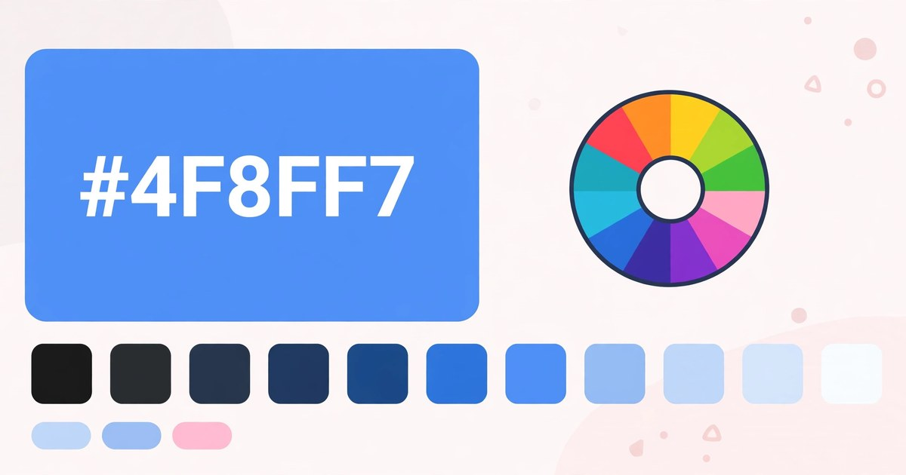

How to Use a Colour Picker Online
Pick any colour and copy its HEX, RGB and HSL codes in one click — free, no signup.
November 10, 2026 · 5 min read

Open the Colour Picker, click the colour swatch or type a HEX code, and copy the HEX, RGB or HSL value shown. The tool starts on blue #4F8FF7, and every change updates all three codes instantly. Free, no signup, nothing leaves your browser.
What the Colour Picker does
The tool opens on one colour: blue #4F8FF7, shown three ways — a large preview swatch, and three copy rows reading HEX #4F8FF7, RGB rgb(79, 143, 247) and HSL hsl(217, 91%, 64%). Each row has its own Copy button, and clicking one confirms with a note such as "HEX copied to clipboard."
There are two ways to choose a colour: click the swatch and your browser's own colour chooser opens — drag until the preview looks right. Or type a code into the HEX box, which takes 3 or 6 hex digits, with or without the leading #. Type #F80 and the tool expands it to #FF8800; type something that is not a HEX code and it tells you plainly: "That doesn't look like a valid HEX code — use 3 or 6 hex digits, e.g. #4F8FF7." An empty box gets its own message: "Type a HEX color code first, e.g. #4F8FF7."
Use a colour picker in 5 steps
- Open the Colour Picker — it loads instantly, no account needed.
- Pick a colour — click the swatch and drag in your browser's colour chooser, or type a HEX code into the box.
- Copy the code you need. HEX, RGB or HSL — one click each.
- Try a shade or a tint — click a swatch in the strip to darken it towards black or lighten it towards white.
- Grab a colour from your screen (Chrome and Edge only). Click Pick from screen, then click any pixel on your screen.
A worked example: the default blue, code by code
Untouched, the tool shows blue #4F8FF7 — the same colour written three ways:
RGB splits the HEX code into three pairs: 4F, 8F and F7. In decimal, 0x4F is 79, 0x8F is 143 and 0xF7 is 247 — so the value is rgb(79, 143, 247): 79 red, 143 green, 247 blue. Blue is biggest, which is why the colour reads as blue.
HSL describes the same colour as hue, saturation and lightness: hsl(217, 91%, 64%). Hue 217 degrees is blue on the colour wheel; 91% saturation means the colour is vivid, and 64% lightness puts it a little above halfway between black and white. The tool calculates all three numbers from the HEX code, so they can never disagree.
A worked example: typing a 3-digit HEX code
Short HEX codes save typing: type #F80 and the tool doubles each digit — F becomes FF, 8 becomes 88, 0 becomes 00 — giving #FF8800, strong orange.
The codes follow at once: rgb(255, 136, 0) — 0xFF is 255, 0x88 is 136, 0x00 is 0 — and hsl(32, 100%, 50%): hue 32 degrees, in the orange range, at full saturation and exactly 50% lightness. The same trick works for any short code: #C06 becomes #CC0066, a deep pink, and #369 becomes #336699, a muted steel blue.
A worked example: the shades & tints strip
The strip holds eleven swatches: the middle one is your colour itself, five to its left darken it towards black, five to its right lighten it towards white. Each step is an even mix:
Two steps left of the middle, the mix is 40% of the way from black to blue #4F8FF7. Red 79 × 0.4 = 31.6 → 32; green 143 × 0.4 = 57.2 → 57; blue 247 × 0.4 = 98.8 → 99. In HEX, 32 is 20, 57 is 39 and 99 is 63 — so that swatch is #203963, a dark navy.
Three steps right of the middle, the mix is 60% of the way from blue to white. Red 79 + (255 − 79) × 0.6 = 184.6 → 185; green 143 + (255 − 143) × 0.6 = 210.2 → 210; blue 247 + (255 − 247) × 0.6 = 251.8 → 252. In HEX, 185 is B9, 210 is D2 and 252 is FC — so that swatch is #B9D2FC, a pale sky blue. Click either swatch and it becomes the active colour, ready to copy.
HEX, RGB or HSL — which code should you copy?
| Format | Looks like | Best for |
|---|---|---|
| HEX | #4F8FF7 | CSS and design tools |
| RGB | rgb(79, 143, 247) | Code needing the channels separately, or transparency (rgba) |
| HSL | hsl(217, 91%, 64%) | Adjusting a colour by feel — lightness to lighten, saturation to mute |
The screen eyedropper, and when it is missing
In Chrome and Edge, a Pick from screen button appears above the preview. Click it, then click any pixel on your screen — a button, a photo, a logo — and that colour lands in the tool, ready to copy.
If the button is not there, your browser does not support the eyedropper — Firefox and Safari hide it entirely. Find the colour's HEX code another way (most design tools show it) and type it in instead.
5 mistakes that waste time with a colour picker
- Typing a colour name instead of a code. "Blue" and "red" are not HEX codes — the box only takes hex digits. Pure blue is #0000FF, pure red #FF0000.
- Using an 8-digit code with transparency. Codes like #4F8FF780 are not accepted — the tool takes 3 or 6 digits only, so drop the last two and pick the solid colour.
- Copying the wrong format for the tool you are pasting into. A field that expects HEX will not understand rgb(79, 143, 247) — check what it wants, then copy that row.
- Judging a colour from the small swatch alone. The same HEX looks different on different screens — check the big preview and the shades strip, and compare it against the background it will sit on.
- Guessing a shade by eye instead of clicking the strip. The strip's swatches are exact mixes — clicking one sets a precise HEX, while eyeballing a darker blue rarely lands on a round, reusable value.
Frequently asked questions
Is the Colour Picker really free?
Yes — every colour you pick and every code you copy is free, with no account, no signup and nothing to install.
Which browsers show the screen eyedropper?
Chrome and Edge only. The "Pick from screen" button appears when your browser supports the EyeDropper feature — in Firefox and Safari it stays hidden, so use the HEX box there instead.
Can I type a 3-digit HEX code?
Yes. Type #F80 and the tool expands it to #FF8800 — each digit doubled — giving rgb(255, 136, 0) and hsl(32, 100%, 50%).
How many shades and tints does the strip show?
Eleven — the colour itself in the middle, five darker shades down to black on the left and five lighter tints up to white on the right. Click any swatch to make it the active colour.
Related tools: Colour Picker · Colour Palette Generator · Gradient Generator · Favicon Generator · Image Format Converter